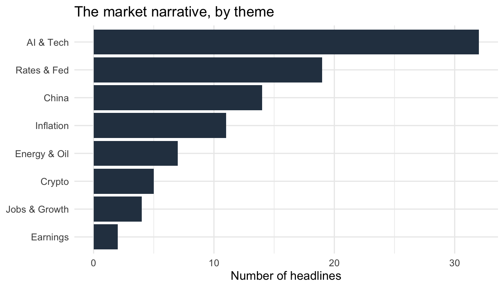
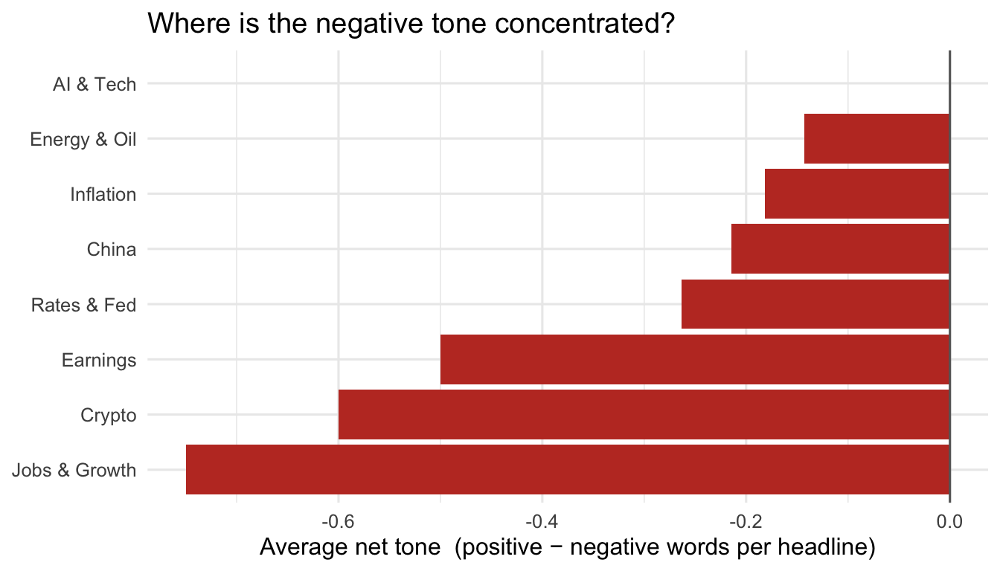

Every trading morning begins the same way: someone scans a wall of financial headlines and forms a gut sense of what the market cares about and whether the mood is nervous or upbeat. That instinct drives real decisions — what to flag to clients, where the risk sits, what to read next. But a gut read is slow, subjective, and impossible to compare from one day to the next.
This post asks a simple question: can we turn the morning news scan into a number? From public financial-news headlines, can we measure (1) which themes the market is talking about right now, and (2) whether coverage of each theme leans positive or negative?
The data and how it is collected
The raw material is headlines from public RSS feeds — the machine-readable feeds that news sites publish specifically for programs to subscribe to. RSS is plain XML, so the rvest package can read each feed and pull out every headline and its timestamp. Because RSS exists for automated access, this sidesteps the ethical and technical problems of scraping locked-down pages: there are no logins or paywalls to bypass, and the code pauses one second between requests so it never stresses a server.
Code
# 1. The feeds we listen to (all public RSS 2.0 endpoints; no logins/paywalls).# If one is retired it is skipped automatically (see safe_parse below) —# check the printout and swap in any feed from the outlet's /rss page.feeds <-tribble(~source, ~url,"CNBC Top News", "https://www.cnbc.com/id/100003114/device/rss/rss.html","CNBC Markets", "https://www.cnbc.com/id/20910258/device/rss/rss.html","CNBC Finance", "https://www.cnbc.com/id/10000664/device/rss/rss.html","Bloomberg Markets", "https://feeds.bloomberg.com/markets/news.rss","Bloomberg Business", "https://feeds.bloomberg.com/business/news.rss","Bloomberg Tech", "https://feeds.bloomberg.com/technology/news.rss","MarketWatch Top", "http://feeds.marketwatch.com/marketwatch/topstories/"# To add Investopedia: its site blocks bots and its native RSS is routed# through Dotdash, so open its Markets News page in a browser, copy the feed# URL, and uncomment the line below (leading comma keeps the tribble valid):# , "Investopedia News", "https://www.investopedia.com/PASTE_FEED_URL_HERE")# 2. Politely fetch ONE feed and parse it into a tidy tibble.# RSS 2.0 structure is: channel > item > (title, pubDate, guid, ...).# NB: rvest's HTML parser lowercases tags, so we select "pubdate", not "pubDate".# We read the article URL from <guid> rather than <link>, because <link> is a# void element in HTML and read_html() drops its text.parse_feed <-function(source, url) {Sys.sleep(1) # be polite between requests items <-read_html(url) |>html_elements("item")tibble(source = source,title = items |>html_element("title") |>html_text2(),pub_raw = items |>html_element("pubdate") |>html_text2(),link = items |>html_element("guid") |>html_text2() )}# If a feed errors (retired, offline), skip it instead of killing the render.safe_parse <-possibly(parse_feed, otherwise =tibble())# 3. Scrape ONCE, then cache a dated snapshot so the analysis is reproducible.# News changes by the minute, so we freeze the exact headlines we saw.snapshot_file <-here("data", "raw", paste0("headlines_", Sys.Date(), ".csv"))if (file.exists(snapshot_file)) { headlines_raw <-read_csv(snapshot_file, show_col_types =FALSE)} else { headlines_raw <-pmap(feeds, safe_parse) |>list_rbind()write_csv(headlines_raw, snapshot_file)}# quick sanity check on what came backcount(headlines_raw, source, name ="n_headlines")
source
n_headlines
Bloomberg Business
20
Bloomberg Markets
20
Bloomberg Tech
20
CNBC Finance
30
CNBC Markets
30
CNBC Top News
30
MarketWatch Top
10
One subtlety matters for reproducibility, and it is the whole reason the code above saves a file. A live scrape can never be reproduced exactly, because the news moves on. So we scrape once and store the result as a dated snapshot (data/raw/headlines_YYYY-MM-DD.csv); every later step reads from that file. Anyone who clones the project regenerates the exact analysis from the exact headlines I saw — even after the live feeds have refreshed.
To score tone I use the Loughran-McDonald dictionary, a word list built specifically for financial text. This choice matters: ordinary sentiment dictionaries mislabel finance words — “liability”, “crude”, or “tender” sound negative in everyday English but are neutral in markets — so a finance-specific list avoids systematic errors. Each headline is split into individual words; every word matching a positive or negative entry scores +1 or −1, and the sum is the headline’s net tone.
Code
# The Loughran-McDonald lexicon ships via {textdata}, which downloads it on first# use. We cache it into the repo (same pattern as the headlines) so the grader# never needs to download anything and every re-render works offline.# ONE-TIME SETUP: run this chunk once in the RStudio console and accept the# download prompt. After that, loughran_lexicon.csv exists and is committed.lex_file <-here("data", "loughran_lexicon.csv")if (file.exists(lex_file)) { loughran <-read_csv(lex_file, show_col_types =FALSE)} else { loughran <-get_sentiments("loughran")write_csv(loughran, lex_file)}loughran_pn <- loughran |>filter(sentiment %in%c("positive", "negative")) |>distinct(word, sentiment)# tone per headline = (# positive words) - (# negative words)headline_tone <- headlines |>unnest_tokens(word, title, drop =FALSE) |>inner_join(loughran_pn, by ="word") |>count(headline_id, sentiment) |>pivot_wider(names_from = sentiment, values_from = n, values_fill =0)# headlines with no lexicon words are neutral (net_tone = 0)if (!"positive"%in%names(headline_tone)) headline_tone$positive <-0Lif (!"negative"%in%names(headline_tone)) headline_tone$negative <-0Lheadlines_scored <- headlines |>left_join(headline_tone, by ="headline_id") |>mutate(across(c(positive, negative), \(x) coalesce(x, 0L)),net_tone = positive - negative,tone_label =case_when( net_tone >0~"Positive", net_tone <0~"Negative",TRUE~"Neutral" ) )
To find themes, I tag each headline against a small keyword dictionary, so a headline mentioning “Fed” or “rate cut” is filed under Rates & Fed. A headline can touch more than one theme.
As of 2026-09-21, the snapshot holds 158 headlines from 7 feeds. Figure 1 shows what they are about: coverage is led by AI & Tech.
Code
theme_summary |>mutate(theme =reorder(theme, n_headlines)) |>ggplot(aes(n_headlines, theme)) +geom_col(fill ="#2c3e50") +labs(x ="Number of headlines", y =NULL,title ="The market narrative, by theme") +theme_minimal(base_size =12)

Figure 1: What financial headlines are about right now. A headline can touch more than one theme.
Figure 2 turns from how much to how it feels. Overall net tone averages -0.18 and 20% of headlines lean negative — an overall cautious mood. But the average hides the useful part; the split by theme is what matters: Jobs & Growth carries the most negative coverage, while AI & Tech skews positive.
Code
theme_summary |>mutate(theme =reorder(theme, avg_tone)) |>ggplot(aes(avg_tone, theme, fill = avg_tone >0)) +geom_col() +geom_vline(xintercept =0, colour ="grey40") +scale_fill_manual(values =c(`TRUE`="#27ae60", `FALSE`="#c0392b"),guide ="none") +labs(x ="Average net tone (positive − negative words per headline)", y =NULL,title ="Where is the negative tone concentrated?") +theme_minimal(base_size =12)

Figure 2: Average headline tone by theme. Bars left of zero mean coverage of that theme skews negative.
Table 1: Theme coverage and average tone, ordered by how much the market is talking about it.
Theme
Headlines
Avg. tone
AI & Tech
32
0.00
Rates & Fed
19
-0.26
China
14
-0.21
Inflation
11
-0.18
Energy & Oil
7
-0.14
Crypto
5
-0.60
Jobs & Growth
4
-0.75
Earnings
2
-0.50
Beyond the score: what the tool can’t read
The cyclical layer cuts the other way, and it’s worth being precise about it. The Bank of Japan has genuinely started to normalise — it took its policy rate to 1% this year, the highest in three decades. That narrows the gap that makes the carry trade work. But narrowing is not closing: the rate differential is still roughly 250 basis points, and the Fed is skewed toward hiking, not cutting. So the carry trade isn’t dead — it’s just carrying more risk. It’s a short-volatility position: it keeps paying a little every day until it very suddenly doesn’t. Normalisation raises the odds of that violent exit without changing the fact that, today, the trade still pays.
If I had to put on a view, I’d separate the two legs. On rates, I’d lean long Japanese government bonds — not because hikes are bullish for bonds (they aren’t), but as a bet that the market has priced the tightening path too aggressively and the BoJ moves slower than that. On the currency, I’d still be short USD/JPY — long the yen — because the structural sellers and the eventual differential compression point the same way, and because after two interventions the one-way-bet quality of being short yen is gone. Two legs, one thesis: Japanese normalisation with the U.S.–Japan gap slowly closing.
Takeaway
For anyone who writes a market update or positions around the day’s narrative, this gives a fast, repeatable read: right now the market’s attention is on AI & Tech, and the nervousness is concentrated in Jobs & Growth. More importantly, the whole thing is one reproducible pipeline — re-render tomorrow and the snapshot, figures, and even these sentences update together, turning a subjective morning scan into a gauge you can track over time.
The method is deliberately simple — a word-count dictionary, not a trained model — so the honest caveat is that it reads tone, not truth: sarcasm, context, and magnitude are lost, and a small snapshot is noisy. But as a first-pass thermometer for market mood, a number beats a gut feeling, for one reason above all: you can compare it tomorrow.
Data source: public RSS feeds from CNBC, MarketWatch, and Investing.com, collected on the date shown above and saved to data/raw/. Sentiment scoring uses the Loughran-McDonald financial lexicon via the tidytext package. All code to reproduce this analysis is in the linked GitHub repository.
Source Code
---title: "What Is the Market Talking About? A Sentiment Read from Financial Headlines"date: 2026-09-16categories: - markets - web scrapingformat: html: toc: true toc-depth: 2 code-fold: true code-tools: true df-print: kable theme: cosmoexecute: warning: false message: false---```{r}#| label: setup#| include: false# --- packages -------------------------------------------------------------library(tidytext); library(readr); library(here)dir.create(here("data"), showWarnings =FALSE, recursive =TRUE)write_csv(get_sentiments("loughran"), here("data", "loughran_lexicon.csv"))library(rvest) # read + parse the RSS (XML) feeds <- the scraping toollibrary(dplyr) # data wranglinglibrary(tidyr) # reshaping (pivot_wider)library(stringr) # text cleaning + keyword tagginglibrary(lubridate) # parse publication dateslibrary(purrr) # safe iteration over feedslibrary(readr) # write / read the data snapshotlibrary(tidytext) # tokenising + Loughran-McDonald finance lexiconlibrary(ggplot2) # figureslibrary(scales) # percent() formattinglibrary(knitr) # kable tableslibrary(here) # project-relative paths (portable across machines)# --- reproducibility settings --------------------------------------------set.seed(6400) # nothing random here, but good habitoptions(scipen =999)# --- project-relative folders (created if missing) -----------------------dir.create(here("data", "raw"), showWarnings =FALSE, recursive =TRUE)```# The questionEvery trading morning begins the same way: someone scans a wall of financialheadlines and forms a gut sense of *what the market cares about* and *whether themood is nervous or upbeat*. That instinct drives real decisions — what to flag toclients, where the risk sits, what to read next. But a gut read is slow,subjective, and impossible to compare from one day to the next.This post asks a simple question: **can we turn the morning news scan into anumber?** From public financial-news headlines, can we measure (1) which themesthe market is talking about right now, and (2) whether coverage of each themeleans positive or negative?# The data and how it is collectedThe raw material is headlines from public **RSS feeds** — the machine-readablefeeds that news sites publish specifically for programs to subscribe to. RSS isplain XML, so the `rvest` package can read each feed and pull out every headlineand its timestamp. Because RSS exists *for* automated access, this sidesteps theethical and technical problems of scraping locked-down pages: there are no loginsor paywalls to bypass, and the code pauses one second between requests so it neverstresses a server.```{r}#| label: collect-headlines# 1. The feeds we listen to (all public RSS 2.0 endpoints; no logins/paywalls).# If one is retired it is skipped automatically (see safe_parse below) —# check the printout and swap in any feed from the outlet's /rss page.feeds <-tribble(~source, ~url,"CNBC Top News", "https://www.cnbc.com/id/100003114/device/rss/rss.html","CNBC Markets", "https://www.cnbc.com/id/20910258/device/rss/rss.html","CNBC Finance", "https://www.cnbc.com/id/10000664/device/rss/rss.html","Bloomberg Markets", "https://feeds.bloomberg.com/markets/news.rss","Bloomberg Business", "https://feeds.bloomberg.com/business/news.rss","Bloomberg Tech", "https://feeds.bloomberg.com/technology/news.rss","MarketWatch Top", "http://feeds.marketwatch.com/marketwatch/topstories/"# To add Investopedia: its site blocks bots and its native RSS is routed# through Dotdash, so open its Markets News page in a browser, copy the feed# URL, and uncomment the line below (leading comma keeps the tribble valid):# , "Investopedia News", "https://www.investopedia.com/PASTE_FEED_URL_HERE")# 2. Politely fetch ONE feed and parse it into a tidy tibble.# RSS 2.0 structure is: channel > item > (title, pubDate, guid, ...).# NB: rvest's HTML parser lowercases tags, so we select "pubdate", not "pubDate".# We read the article URL from <guid> rather than <link>, because <link> is a# void element in HTML and read_html() drops its text.parse_feed <-function(source, url) {Sys.sleep(1) # be polite between requests items <-read_html(url) |>html_elements("item")tibble(source = source,title = items |>html_element("title") |>html_text2(),pub_raw = items |>html_element("pubdate") |>html_text2(),link = items |>html_element("guid") |>html_text2() )}# If a feed errors (retired, offline), skip it instead of killing the render.safe_parse <-possibly(parse_feed, otherwise =tibble())# 3. Scrape ONCE, then cache a dated snapshot so the analysis is reproducible.# News changes by the minute, so we freeze the exact headlines we saw.snapshot_file <-here("data", "raw", paste0("headlines_", Sys.Date(), ".csv"))if (file.exists(snapshot_file)) { headlines_raw <-read_csv(snapshot_file, show_col_types =FALSE)} else { headlines_raw <-pmap(feeds, safe_parse) |>list_rbind()write_csv(headlines_raw, snapshot_file)}# quick sanity check on what came backcount(headlines_raw, source, name ="n_headlines")```One subtlety matters for reproducibility, and it is the whole reason the codeabove saves a file. A *live* scrape can never be reproduced exactly, because thenews moves on. So we scrape once and store the result as a dated snapshot(`data/raw/headlines_YYYY-MM-DD.csv`); every later step reads from that file.Anyone who clones the project regenerates the *exact* analysis from the *exact*headlines I saw — even after the live feeds have refreshed.```{r}#| label: cleanheadlines <- headlines_raw |>filter(!is.na(title), title !="") |>mutate(title =str_squish(title)) |>distinct(title, .keep_all =TRUE) |># drop cross-feed duplicatesmutate(# RSS dates look like "Wed, 17 Sep 2026 21:30:00 GMT"; parse best-effort.pub_time =dmy_hms(pub_raw, quiet =TRUE),headline_id =row_number() )```# Measuring tone and themesTo score **tone** I use the **Loughran-McDonald dictionary**, a word list builtspecifically for financial text. This choice matters: ordinary sentimentdictionaries mislabel finance words — "liability", "crude", or "tender" soundnegative in everyday English but are neutral in markets — so a finance-specificlist avoids systematic errors. Each headline is split into individual words; everyword matching a *positive* or *negative* entry scores +1 or −1, and the sum is theheadline's **net tone**.```{r}#| label: sentiment# The Loughran-McDonald lexicon ships via {textdata}, which downloads it on first# use. We cache it into the repo (same pattern as the headlines) so the grader# never needs to download anything and every re-render works offline.# ONE-TIME SETUP: run this chunk once in the RStudio console and accept the# download prompt. After that, loughran_lexicon.csv exists and is committed.lex_file <-here("data", "loughran_lexicon.csv")if (file.exists(lex_file)) { loughran <-read_csv(lex_file, show_col_types =FALSE)} else { loughran <-get_sentiments("loughran")write_csv(loughran, lex_file)}loughran_pn <- loughran |>filter(sentiment %in%c("positive", "negative")) |>distinct(word, sentiment)# tone per headline = (# positive words) - (# negative words)headline_tone <- headlines |>unnest_tokens(word, title, drop =FALSE) |>inner_join(loughran_pn, by ="word") |>count(headline_id, sentiment) |>pivot_wider(names_from = sentiment, values_from = n, values_fill =0)# headlines with no lexicon words are neutral (net_tone = 0)if (!"positive"%in%names(headline_tone)) headline_tone$positive <-0Lif (!"negative"%in%names(headline_tone)) headline_tone$negative <-0Lheadlines_scored <- headlines |>left_join(headline_tone, by ="headline_id") |>mutate(across(c(positive, negative), \(x) coalesce(x, 0L)),net_tone = positive - negative,tone_label =case_when( net_tone >0~"Positive", net_tone <0~"Negative",TRUE~"Neutral" ) )```To find **themes**, I tag each headline against a small keyword dictionary, so aheadline mentioning "Fed" or "rate cut" is filed under *Rates & Fed*. A headlinecan touch more than one theme.```{r}#| label: themestheme_patterns <-c("Rates & Fed"="\\b(fed|fomc|rate|rates|powell|hike|cut|yield|treasur|bond)","Inflation"="\\b(inflation|cpi|ppi|deflation|prices?)\\b","AI & Tech"="\\b(ai|chip|chips|nvidia|semiconductor|tech|software|data center)\\b","China"="\\b(china|chinese|beijing|yuan|hong kong)\\b","Energy & Oil"="\\b(oil|crude|opec|energy|gas|barrel)\\b","Earnings"="\\b(earnings|profit|revenue|guidance|results)\\b","Jobs & Growth"="\\b(jobs|payroll|unemployment|labor|gdp|growth|recession)\\b","Crypto"="\\b(bitcoin|crypto|ethereum|token)\\b")# one row per (headline, theme) matchtheme_hits <-imap(theme_patterns, \(pat, theme) { headlines_scored |>filter(str_detect(str_to_lower(title), pat)) |>transmute(headline_id, title, net_tone, theme = theme)}) |>list_rbind()theme_summary <- theme_hits |>group_by(theme) |>summarise(n_headlines =n(), avg_tone =mean(net_tone), .groups ="drop") |>arrange(desc(n_headlines))``````{r}#| label: prose-stats#| include: false# values used inline in the prose so every number is generated, not typedn_headlines <-nrow(headlines_scored)n_sources <-n_distinct(headlines_scored$source)overall_tone <-mean(headlines_scored$net_tone)share_negative <-mean(headlines_scored$tone_label =="Negative")top_theme <- theme_summary$theme[1]most_neg_theme <- theme_summary |>slice_min(avg_tone, n =1, with_ties =FALSE) |>pull(theme)most_pos_theme <- theme_summary |>slice_max(avg_tone, n =1, with_ties =FALSE) |>pull(theme)mood_word <-if (overall_tone <0) "cautious"else"constructive"```# What the headlines sayAs of `r Sys.Date()`, the snapshot holds **`r n_headlines`** headlines from**`r n_sources`** feeds. Figure 1 shows *what they are about*: coverage is led by**`r top_theme`**.```{r}#| label: fig-themes#| fig-cap: "What financial headlines are about right now. A headline can touch more than one theme."#| fig-width: 7#| fig-height: 4theme_summary |>mutate(theme =reorder(theme, n_headlines)) |>ggplot(aes(n_headlines, theme)) +geom_col(fill ="#2c3e50") +labs(x ="Number of headlines", y =NULL,title ="The market narrative, by theme") +theme_minimal(base_size =12)```Figure 2 turns from *how much* to *how it feels*. Overall net tone averages**`r round(overall_tone, 2)`** and **`r percent(share_negative, accuracy = 1)`** ofheadlines lean negative — an overall **`r mood_word`** mood. But the average hidesthe useful part; the split *by theme* is what matters: **`r most_neg_theme`**carries the most negative coverage, while **`r most_pos_theme`** skews positive.```{r}#| label: fig-tone#| fig-cap: "Average headline tone by theme. Bars left of zero mean coverage of that theme skews negative."#| fig-width: 7#| fig-height: 4theme_summary |>mutate(theme =reorder(theme, avg_tone)) |>ggplot(aes(avg_tone, theme, fill = avg_tone >0)) +geom_col() +geom_vline(xintercept =0, colour ="grey40") +scale_fill_manual(values =c(`TRUE`="#27ae60", `FALSE`="#c0392b"),guide ="none") +labs(x ="Average net tone (positive − negative words per headline)", y =NULL,title ="Where is the negative tone concentrated?") +theme_minimal(base_size =12)``````{r}#| label: tbl-summary#| tbl-cap: "Theme coverage and average tone, ordered by how much the market is talking about it."theme_summary |>mutate(avg_tone =round(avg_tone, 2)) |>rename(Theme = theme, `Headlines`= n_headlines, `Avg. tone`= avg_tone) |>kable()```::: {.callout-note}## Beyond the score: what the tool can't readThe cyclical layer cuts the other way, and it's worth being precise about it.The Bank of Japan has genuinely started to normalise — it took its policy rateto 1% this year, the highest in three decades. That narrows the gap that makesthe carry trade work. But narrowing is not closing: the rate differential isstill roughly 250 basis points, and the Fed is skewed toward *hiking*, notcutting. So the carry trade isn't dead — it's just carrying more risk. It's ashort-volatility position: it keeps paying a little every day until it verysuddenly doesn't. Normalisation raises the odds of that violent exit withoutchanging the fact that, today, the trade still pays.If I had to put on a view, I'd separate the two legs. On rates, I'd lean longJapanese government bonds — not because hikes are bullish for bonds (theyaren't), but as a bet that the market has priced the tightening path tooaggressively and the BoJ moves slower than that. On the currency, I'd still beshort USD/JPY — long the yen — because the structural sellers and the eventualdifferential compression point the same way, and because after twointerventions the one-way-bet quality of being short yen is gone. Two legs, onethesis: Japanese normalisation with the U.S.–Japan gap slowly closing.:::# TakeawayFor anyone who writes a market update or positions around the day's narrative,this gives a fast, repeatable read: right now the market's attention is on**`r top_theme`**, and the nervousness is concentrated in **`r most_neg_theme`**.More importantly, the whole thing is *one reproducible pipeline* — re-rendertomorrow and the snapshot, figures, and even these sentences update together,turning a subjective morning scan into a gauge you can track over time.The method is deliberately simple — a word-count dictionary, not a trained model —so the honest caveat is that it reads *tone*, not *truth*: sarcasm, context, andmagnitude are lost, and a small snapshot is noisy. But as a first-pass thermometerfor market mood, a number beats a gut feeling, for one reason above all: you cancompare it tomorrow.---*Data source: public RSS feeds from CNBC, MarketWatch, and Investing.com,collected on the date shown above and saved to `data/raw/`. Sentiment scoring usesthe Loughran-McDonald financial lexicon via the `tidytext` package. All code toreproduce this analysis is in the linked GitHub repository.*